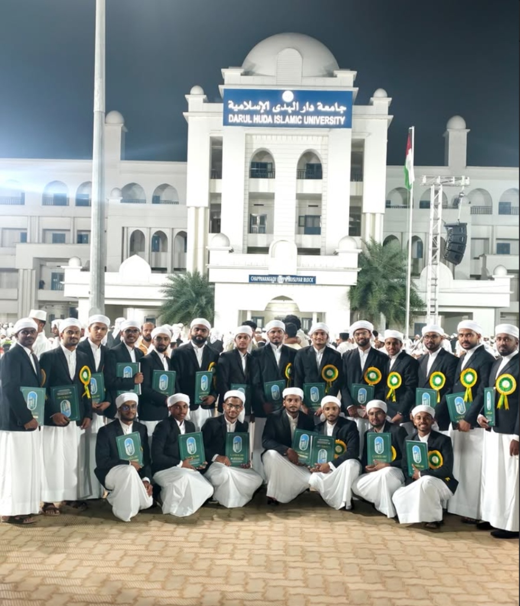
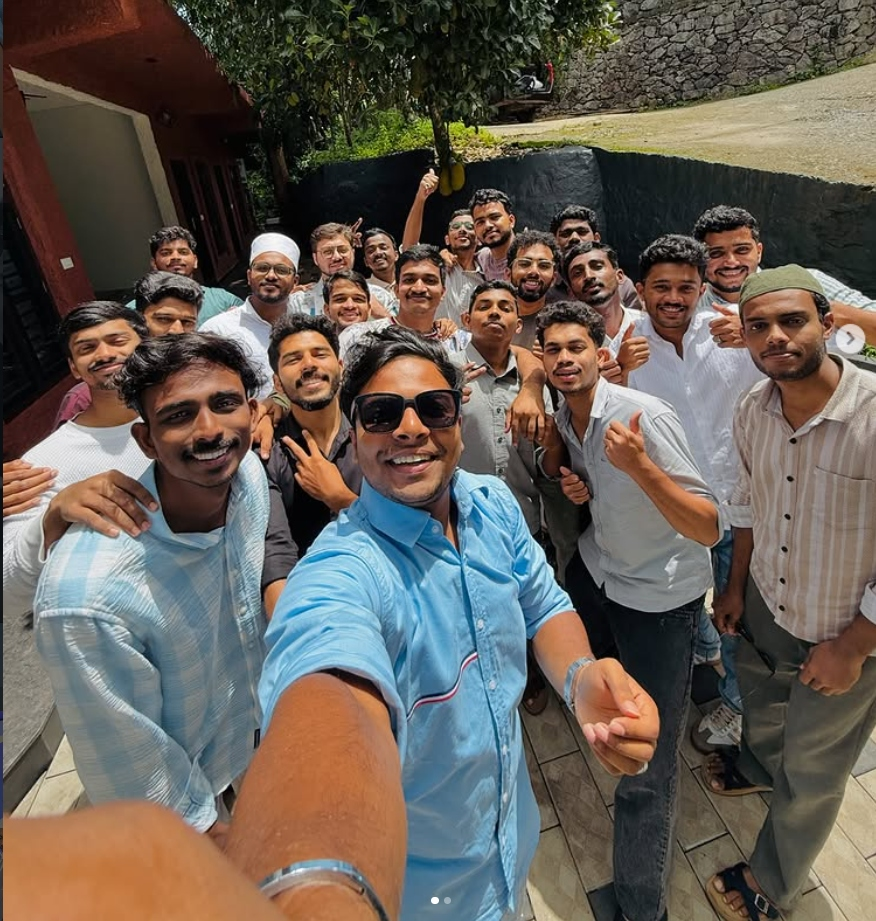
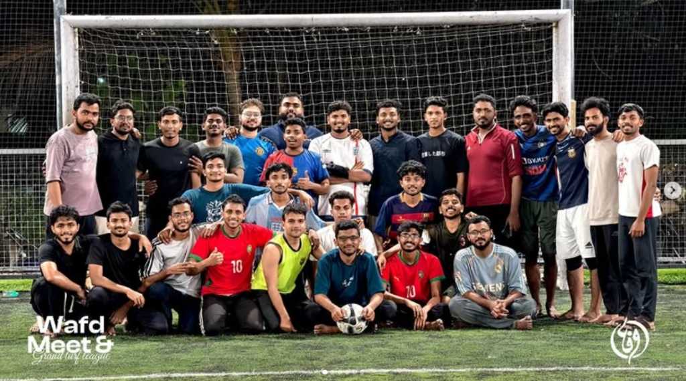
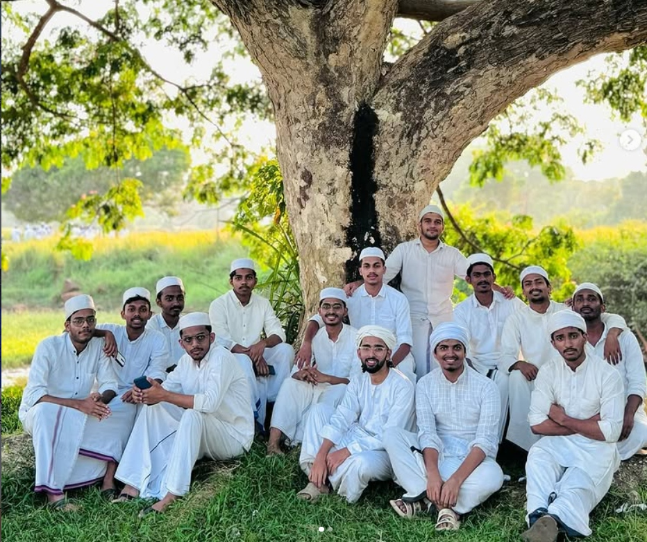
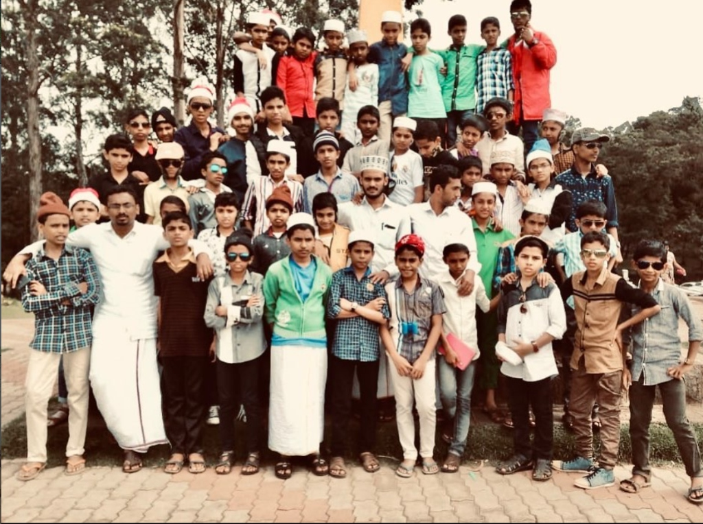

Twelve Years of Knowledge, Faith & Brotherhood
We are the proud 16th Batch of Sabeelul Hidaya Islamic College (SHIC) — a brotherhood forged over 12 remarkable years of Islamic learning, spiritual growth, and lifelong friendship.
Our journey began on 9th May 2012, when we walked through the gates of SHIC as young students eager to seek knowledge. Twelve transformative years later, we graduated on 5th March 2024, carrying with us the torch of Islamic scholarship and values.
Through years of Quran, Hadith, Fiqh, Arabic language, and Islamic sciences — our batch emerged not just as scholars, but as brothers bonded for life.
Sabeelul Hidaya Islamic College
Every moment together is a treasure we carry in our hearts forever

5th March 2024 — The proudest day of our 12-year journey. We received our degrees at Darul Huda Islamic University, dressed in black suits and white turbans, each holding our certificates of Islamic scholarship.

A joyful reunion — brothers reunited, laughter and love captured in one selfie. These friendships are for life.

Beyond books and studies — our brotherhood shone on the football field too. The Wafd Meet & Grand Turf League was more than a game; it was unity in sport.

Dressed in white, seated under the shade of a great tree — a moment of peace, simplicity, and spiritual beauty that captures the soul of our SHIC days.

When we were young students on an adventure — our early madrasa excursion trip where the seeds of lifelong brotherhood were first planted.
United by faith, bonded by twelve years of shared memories
Sabeelul Hidaya Islamic College
Of Dedication & Learning
Our Academic Journey
We enrolled at Sabeelul Hidaya Islamic College on 9th May 2012, beginning our journey as the 16th Batch — young minds hungry for knowledge and Islamic wisdom.
Laying the groundwork in Quranic recitation, Arabic language, Islamic history, and foundational sciences. Brotherhood formed in the early years of study.
Advanced studies in Hadith sciences, Fiqh, Tafseer, and Islamic jurisprudence. Developing scholars with deep understanding of Islamic principles.
Final years of advanced Islamic scholarship. Mastery of classical texts, rigorous academic preparation, and spiritual development as future community leaders.
We proudly graduated as the 16th Batch of SHIC at Darul Huda Islamic University — carrying forward 12 years of learning, faith, and brotherhood into the world.
طَلَبُ الْعِلْمِ فَرِيضَةٌ عَلَى كُلِّ مُسْلِمٍ"Seeking knowledge is an obligation upon every Muslim."
— Prophet Muhammad ﷺ (Ibn Majah)
The bond of brotherhood continues beyond graduation
Sabeelul Hidaya Islamic College (SHIC)
Alma MaterAlumni Network — Together Forever
Est. 202412 Years of Knowledge & Brotherhood
2012 — 2024